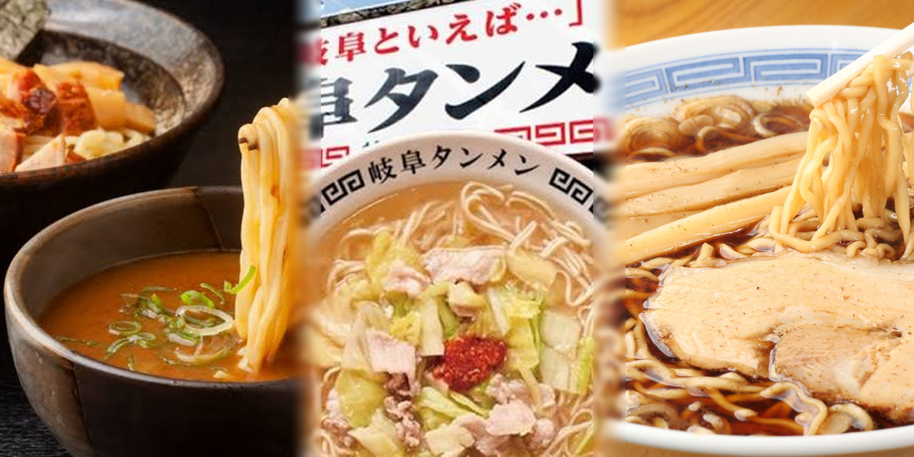
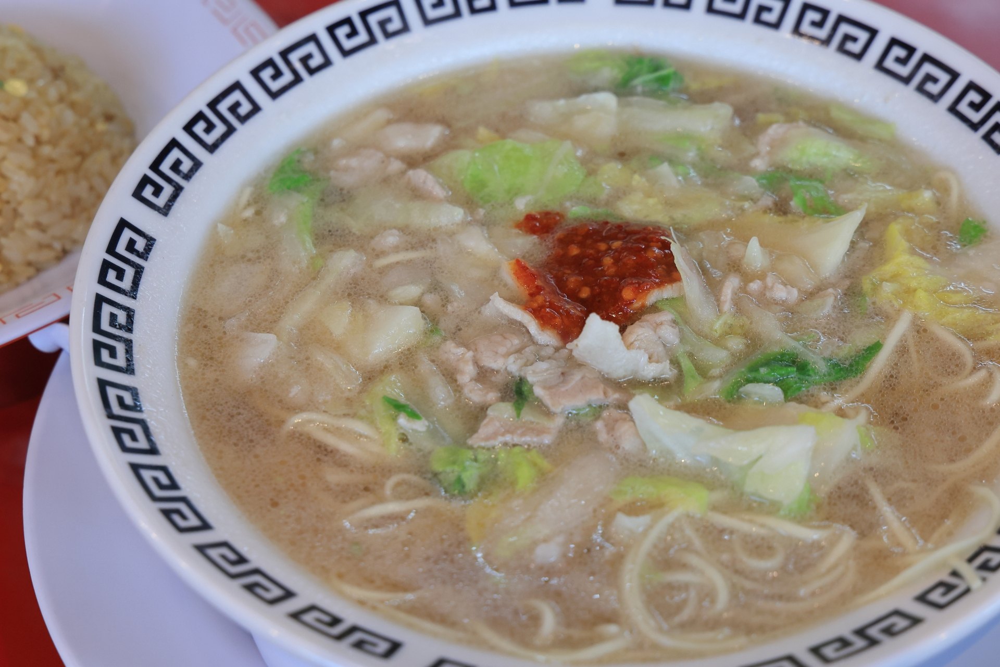
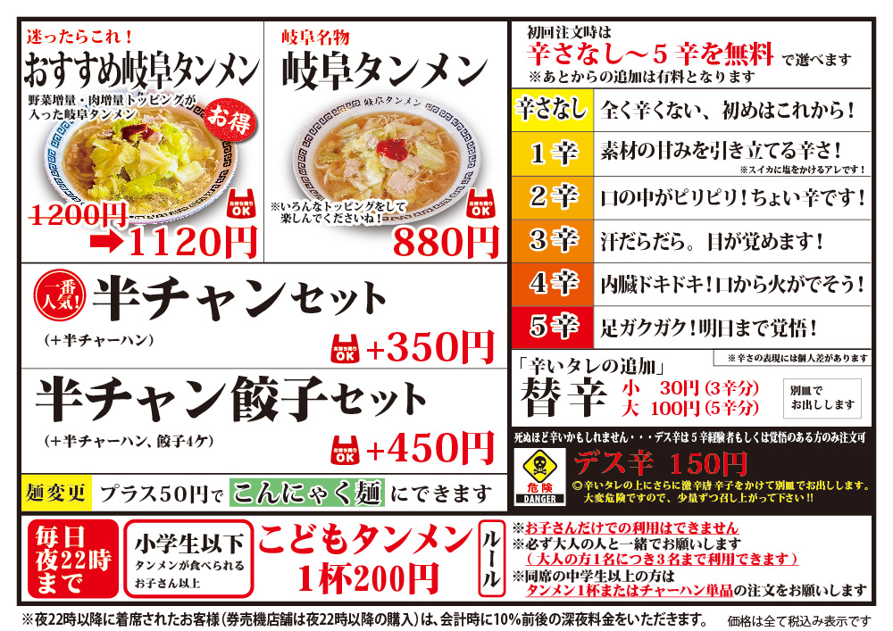
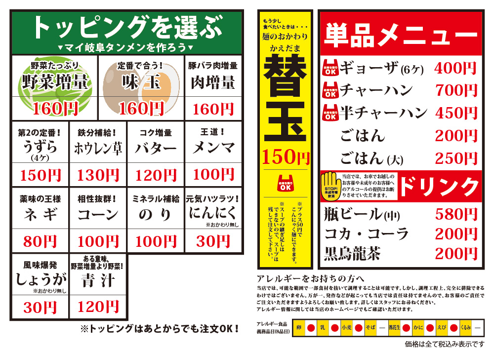
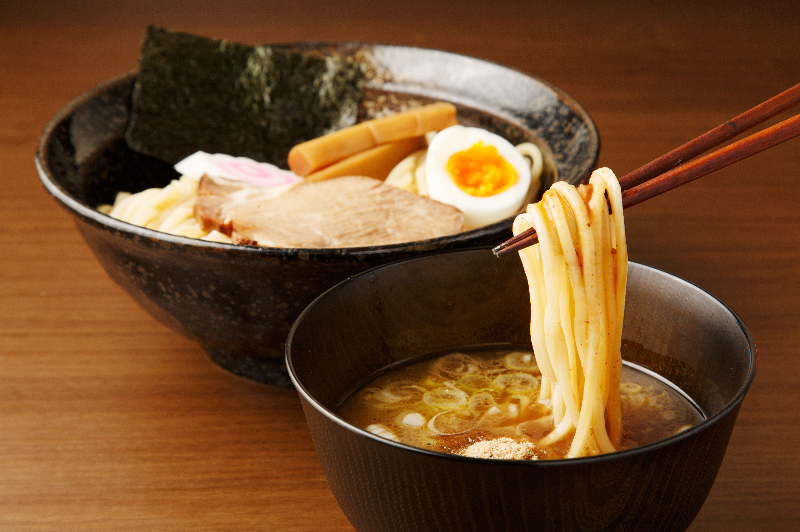
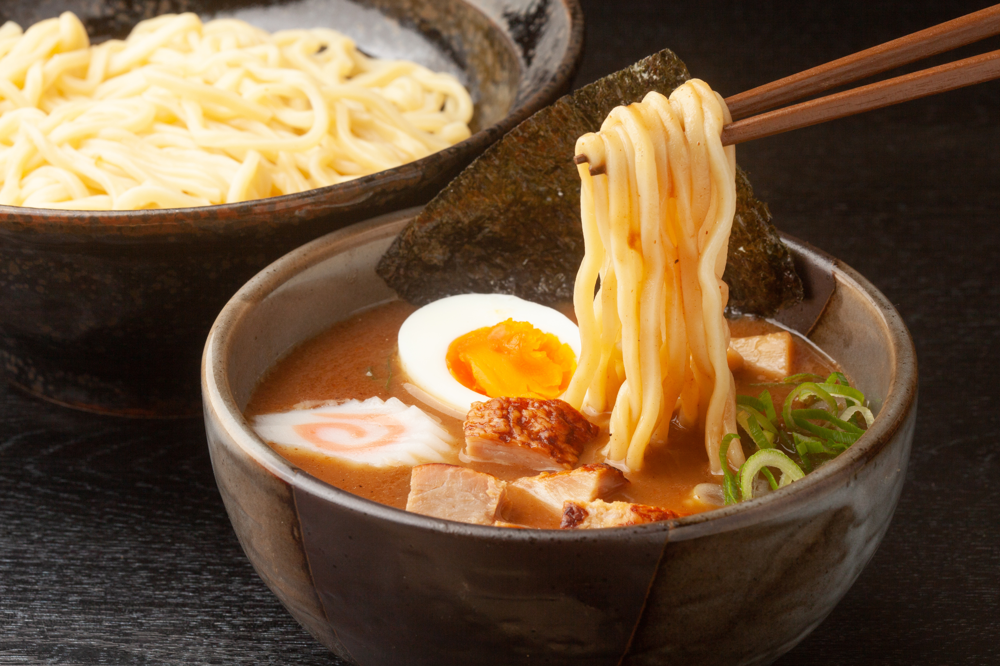
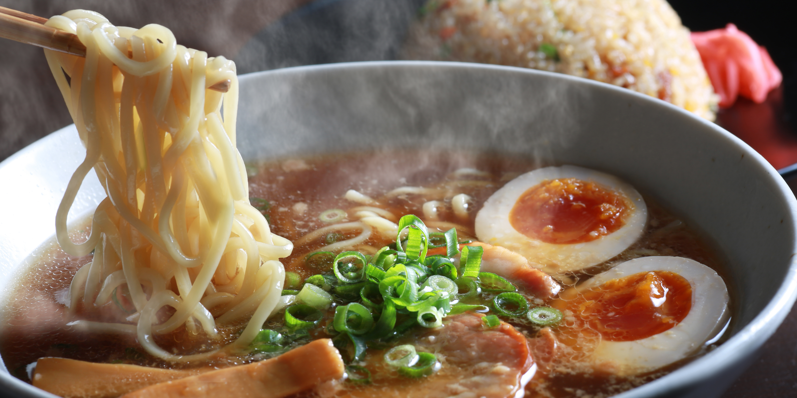
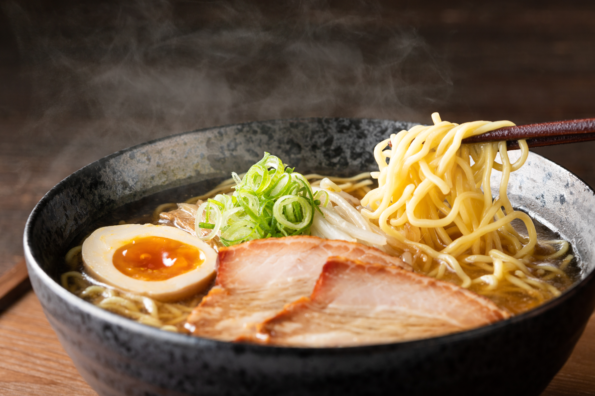

岐阜の絶品ラーメンを紹介！

岐阜のおすすめラーメンをご紹介していきます
各カードのパネルをクリックして詳細をご覧ください
岐阜といえば...岐阜タンメン！
岐阜タンメン

岐阜タンメンは、にんにくが効いた塩ベースのスープに、白菜・キャベツ・豚バラ肉を合わせて炒めた具材をのせた、東海地方の独自のご当地ラーメンです
いろんな味が楽しめる！


辛さは５段階から選べ、子供から大人までおいしく食べられるラーメンです！
トッピングも豊富で、味玉やネギなどの定番のトッピングから青汁などの変わったものまで楽しめます！
岐阜タンメン 岐阜本店
参考：https://gifu-tanmen.com/（2026/10/21）
岐阜でつけ麺を食べるならココ！
岐阜のおすすめつけ麺！
思わず毎日食べたくなってしまう。そんなつけ麺をご紹介していきます
らぁめん「りきどう」

岐阜市の大人気行列店！
この店の見どころは、「自家製麺」と「極厚チャーシュー」！
名物の「焙煎2色つけ麺」や、まるで一反木綿のように幅広な「凄平麺」は、見た目のインパクトはもちろん、小麦の香りともちもちの強いコシがあなたの胃袋をつかみます！
| 営業時間 | 11:00-14:15 / 17:30-21:15 |
|---|---|
| 電話番号 | 058-214-4385 |
| 住所 | 岐阜県岐阜市島栄町2-53 |
らぁめん「りきどう」
つけ麺 本丸

濃厚魚介と香り高い柚子が織りなす至福の一杯「つけ麺 本丸」
鶏がら、豚骨、魚介などのうまみを合わせたダシに、
高知県産の爽やかな柚子の香りが上品ですっきりとした後味をもたらします！
並盛、大盛、特盛が無料で変更できるのも、嬉しいポイントです！
メニューも豊富で、ラーメンや台湾まぜそばなどもあるので、何度通っても飽きません！
| 営業時間（平日） | 11:00-15:00 / 17:30-24:00 |
|---|---|
| 営業時間（土日祝） | 11:00~24:00 |
| 電話番号 | 058-372-6161 |
| 住所 | 岐阜県岐阜市柳津町本郷3-112 |
つけ麺 本丸 柳津店
参考：https://tsukemen-honmaru.com/menu.html （2026/10/21）
岐阜のご当地グルメ！「高山ラーメン」
高山ラーメン

鶏ガラ・煮干し・野菜などを煮込んだあっさりとした醤油スープと、コシのある極細の縮れ麺が特徴の岐阜県高山市のご当地グルメ
ここからはおすすめの高山ラーメンのお店を紹介していきます！
高山中華そばの原点。「まさごそば」

メニューは中華そばとごはんのみ
昭和13年創業、屋台から始まった老舗です。
高山中華そばの“原点”といわれるだけあり、中華そば一本勝負の潔さに心つかまれます。
スープがよく絡む細ちぢれ麺に、自家製チャーシュー、メンマ、ネギという極めてシンプルで無駄のない一杯です。
| 営業時間 | 11:00~15:50（水曜定休日） |
|---|---|
| 電話番号 | 0577-32-2327 |
| 住所 | 岐阜県高山市有楽町31-3 |
| 駐車場 | 〇 |
まさごそば
あっさりした高山ラーメンが食べたいならココ！「なかつぼ」
ザ・高山ラーメン
昭和39年創業、中華そば専門店です。
極細のちぢれ麺に澄んだスープは思わず飲み干してしまいたくなるほど絶品です！
駐車場も配備されているので、観光に来た際にはぜひ立ち寄ってみてください！
| 営業時間 | 11:00~22:00（火曜定休日） |
|---|---|
| 電話番号 | 0577-32-1946 |
| 住所 | 岐阜県高山市総和町1-23-5 |
| 駐車場 | 〇 |
なかつぼ
参考：https://www.hidatakayama.or.jp/special/detail_467.html （2026/10/21）